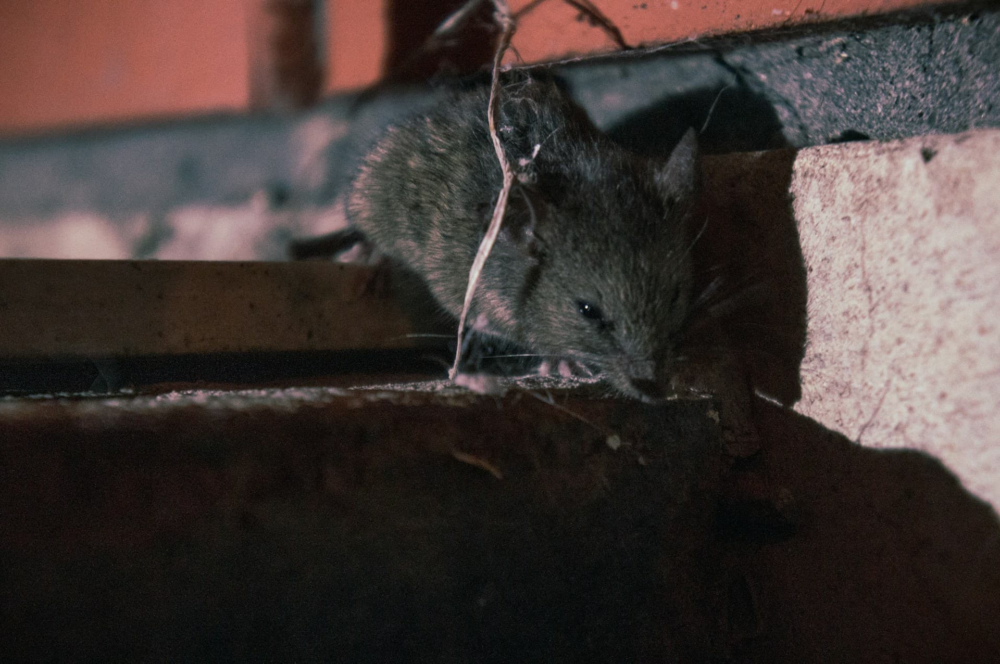

Notice where it starts
Use the location of the activity first: attic edges, roof vents, crawlspaces, decks, sheds, utility gaps, or fence-line movement.
How The Platform Works
Start with the sign, the location, and the type of damage. The goal is to help homeowners understand whether a situation points to removal, exclusion, cleanup, repair, or a combination before reviewing local assistance options.
What To Use It For
The Homeowner Route
Start with the area of the property where the issue repeats, then compare the kind of work that may be needed before reviewing local options.

Use the location of the activity first: attic edges, roof vents, crawlspaces, decks, sheds, utility gaps, or fence-line movement.
Compare whether the situation points to humane removal, entry-point sealing, cleanup, odor control, or minor repair around damaged access areas.
Request local options only after the issue is clearer, so homeowners can compare independent providers by problem type instead of guessing.
What You Can Compare
Use the site to compare the type of help that may be discussed locally: humane removal, sealing and exclusion, contamination cleanup, odor control, insulation replacement, or minor repair around damaged entry points.
Platform Role
This site does not perform wildlife work. Its role is to help homeowners organize the issue clearly enough to review independent local providers by problem type rather than guessing from a general service label.